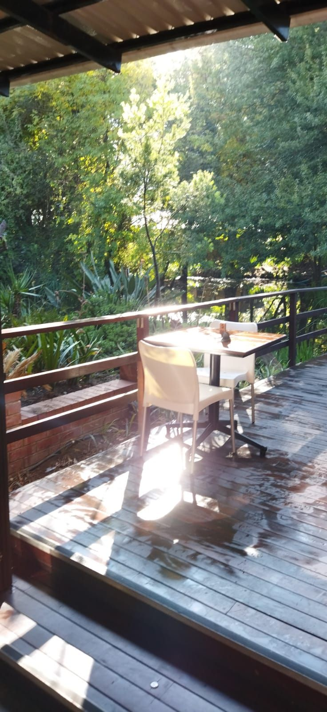
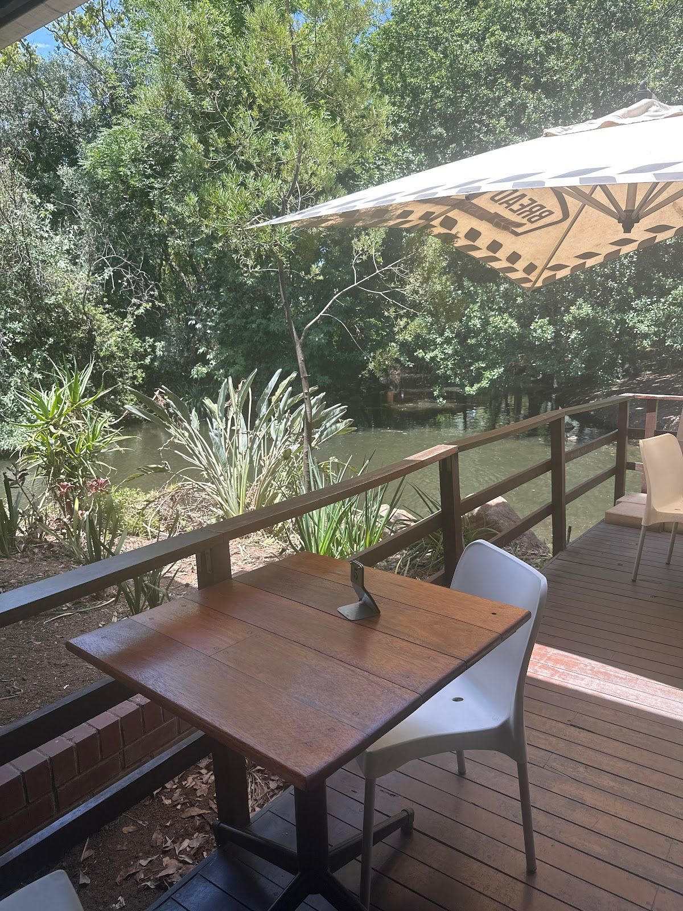

The Daily Grind is a beloved local cafe in the heart of Woodmead, Sandton, where we serve delicious food and drinks that are sure to warm your heart. Our cafe is a cozy spot for locals to gather, enjoy good company, and indulge in hearty meals made with love.
Our story began with a passion for creating memorable dining experiences. We believe in the power of food to bring people together, and our menu reflects our commitment to quality and freshness. Every dish is prepared with the finest ingredients, ensuring that each bite is a delightful experience.
At The Daily Grind, we value our community and strive to offer a welcoming atmosphere where everyone feels at home. Our promise is to provide exceptional service and heartfelt food that leaves a lasting impression. We invite you to join us and experience the warmth of our cafe.
Explore our offerings and discover the delightful experiences awaiting you at The Daily Grind.
Relax in our warm, inviting space where every sip and bite is crafted to recharge your day.
Enjoy fresh air and delightful flavors in our charming outdoor seating area, perfect for sunlit brunches and starry night dinners.
Fuel your day with our swift, delicious takeaways, expertly crafted for busy lifestyles without compromising on taste.
"Awesome place to have a meeting. Great food. Great prices. On a small steam/dam."— Richard Atkins, ⭐⭐⭐⭐⭐
"Food: 5 Service: 5 Atmosphere: 5"— Zithobe Mnyango, ⭐⭐⭐⭐⭐


We'd love to hear from you — reach out to us anytime.